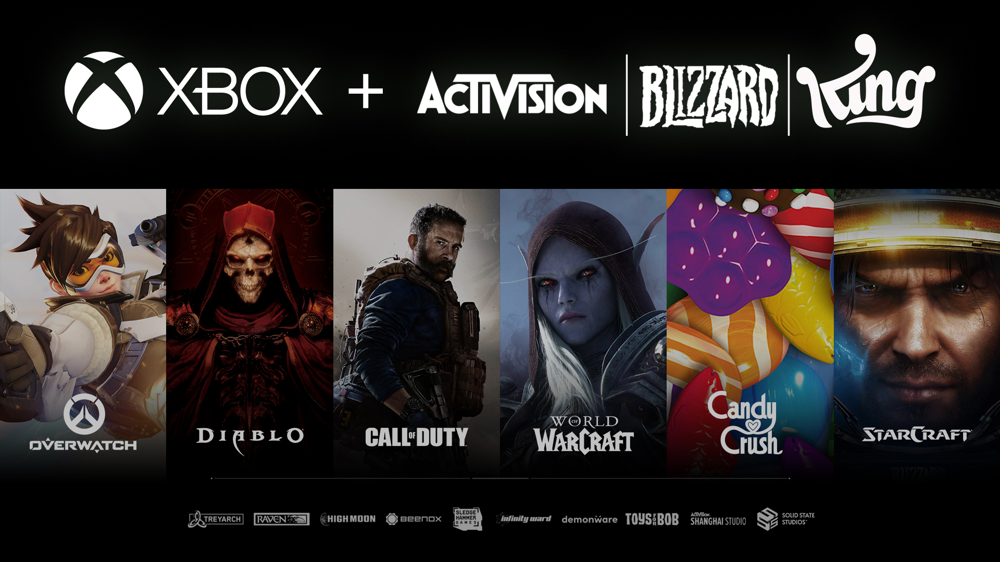

Blizzard Entertainment es una reconocida empresa de videojuegos fundada en 1991. A lo largo de los años, han desarrollado juegos icónicos como Warcraft, Diablo, y StarCraft.
Blizzard es conocida por su enfoque en la calidad y la narrativa en sus juegos, lo que ha llevado a la creación de comunidades apasionadas de jugadores en todo el mundo.
También han sido pioneros en los juegos en línea, lanzando World of Warcraft, uno de los MMORPG más populares de todos los tiempos. A lo largo de su historia, Blizzard ha brindado a los jugadores experiencias inolvidables y ha influenciado la industria de los videojuegos de maneras significativas.
La visión de Blizzard ha sido siempre la de crear mundos ricos, personajes memorables y desafíos épicos. Su dedicación a la calidad y la innovación ha sido evidente en cada uno de sus títulos, desde los primeros días de Warcraft hasta los éxitos actuales como Overwatch y Hearthstone.
A lo largo de las décadas, Blizzard ha mantenido una base de seguidores leales y ha continuado expandiendo sus franquicias, construyendo universos que resuenan en la cultura pop y dejando una huella duradera en el mundo de los videojuegos.
En resumen, la historia de Blizzard es una historia de creatividad, pasión y dedicación a la excelencia en el mundo de los videojuegos. A través de sus juegos, han conectado a jugadores de todo el mundo y han creado experiencias que perdurarán por generaciones.
